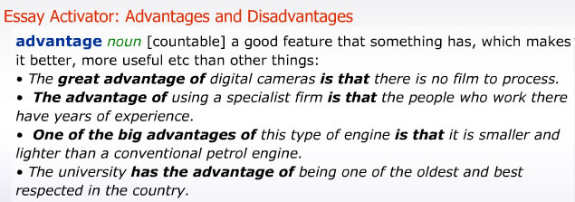
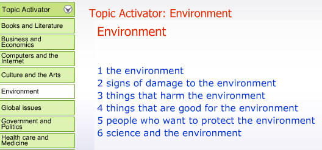

Essay Activator
The Essay Activator helps you with the language you need to write exam essay
answers.

Topic Activator
The Topic Activator helps you with the language you need to write about important
topics.

Exercises
The Writing Handbook contains exam writing exercises. The Longman Exam Coach
does not score the exercises. You need to write your answer on a word-processor
or on paper and then compare it with the sample answer.